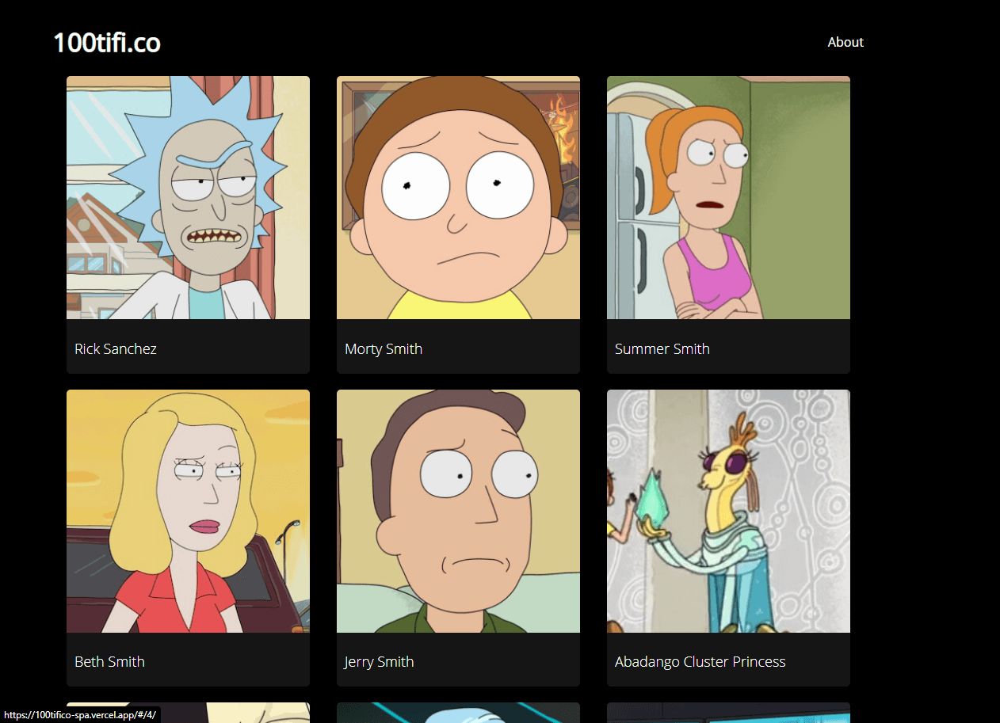

Hola! Soy Eliezer Rojas
- Frontend Developer -
Sobre mí
Desarrollador Frontend.
Me he dedicado a construir sitios web destacados durante el último año, que cumplen con las últimas tendencias de desarrollo y diseño.
Continuamente adquiriendo y desarrollando nuevas habilidades según las actuales tendencias tecnológicas. Apasionado con el trabajo que realizo, ofreciendo en cada proyecto total dedicación, personalización y calidad.
Me he dedicado a construir sitios web destacados durante el último año, que cumplen con las últimas tendencias de desarrollo y diseño.
Continuamente adquiriendo y desarrollando nuevas habilidades según las actuales tendencias tecnológicas. Apasionado con el trabajo que realizo, ofreciendo en cada proyecto total dedicación, personalización y calidad.
Mis skills:
HTML 5
CSS 3
Javascript
Bootstrap
Sass
git
Servicios
Responsive Desing
Las personas acceden desde todo tipo de dispositivos a una pagina web, ahi entra en juego la adaptabilidad.
Desarrollo
La presencia digital es de vital importancia. ¡Yo te puedo ayudar a crear un website increíble!
Integración con Redes Sociales
Existen un montón de redes sociales. Es impotante promover nuestra presencia en ellas a través de la web.
SEO
Podemos hacer que los clientes te encuentren aún cuando no sepan que te buscan.
Diseño Creativo
Todo buen producto requiere de una increíble presentación, incluyendo un sitio web.
Performance
Mejorar la experiencia de los usuarios que visitan tu pagina es vital. ¡El tiempo de carga es una de esas mejoras!
Portafolio

100tifi.co (SPA con Js vanilla)
Tecnologías usadas: HTML5, CSS3, Javascript y Webpack